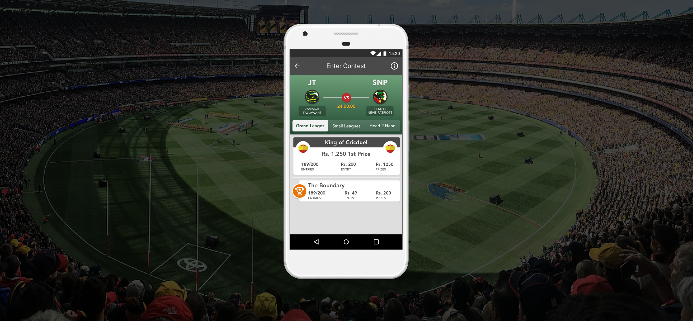

CricDuel is a fantasy sports contest that allows Cricket lovers to play daily, as opposed to a lengthy season. Matching a pair of players to enter into a draft picking system gives each player the opportunity to pick the ultimate team for that match. CricDuel is unique and allows players to create one-of-a-kind team. This allows for a much more even playing field between the entry level beginner and the long time playing cricket lover.

Cricduel approached our design team with a number of requests and goals: Improve the overall user experience of its core features, engage more users and create a new visual direction for their app.
Some key insights that we discovered while talking with our client, conducting user interviews and competitor and comparator analysis.
No statistics provided for each player. Would have to look up the information on a player on a different app or browser.
Engagement. New users were not actively engaging with the app over time

No push notifications indicating if the match and contest were completed.

Low quality in visual design. Cricduel did not have a proprietary designer and with organic growth and an influx of users there was an increase in design debt.

Live Draft: A new game mode that is used by a few fantasy sports apps, but none used by Cricduels direct competitors. This would be the unique value proposition Cricduel would offer and attract new users.

Leaderboard: to make Cricduel even more competitive and fun a global leaderboard feature to gameify the experience was requested. Having a leaderboard would increase user retention and interaction with the app.

with the majority of user base in India our user base The client at the time did not want our team to invest time and resources into research
we audited all parts of the app to gain an understanding of the features and components.
With the information gathered from the competitive/comparator research and the discovery phase I pushed for the restructuring of the core feature: classic draft. Which would create a more engaging experience for the new user.
One of the key goals of the project was to create new visual design and design language that would be consistent throughout the features and app. We wanted it to be modern, but stay true to the original brand. While redesigning the app we went through a check list:
Is it Fun?
is it intuitive?
is it fun and approachable?
After sketching, iterating and further discussion we landed on a design for the classic draft and implemented the design across the application.
We created task flows and sketched out various improvements from the research that could help the general user experience with the features. Ways to increase engagement with new users and make the digestion of information easier and pleasant to view.
A majority of the users based in India and had 360 x 640 resolution. Taking that into consideration with the amount of information our app was delivering paired along with our design we had to think of ways how to display the information and accommodate scrolling. Here are a few examples we played with:
Classic draft is where the player chooses an upcoming match. Ther player then chooses to enter a contest to enter. There are three contest categories which differ in player entries and prizes. The user can then create his/her custom team from the match and compete against other users.
Leaderboard that showed the monthly rank, badges earned from winning in contests and win amounts. We also included a hierarchy from beginner to intermediate. The intent of the leaderboard because people like to win and compare themselves with their community which motivates them.
Livedraft is where the users would choose an upcoming cricket match and enter a contest where they would play against another user Head-to-Head. They would be given 30 seconds to draft a players and would alternate choosing until all player positions have been filled. The teams would be locked in and results would be announced after the cricket match is over.